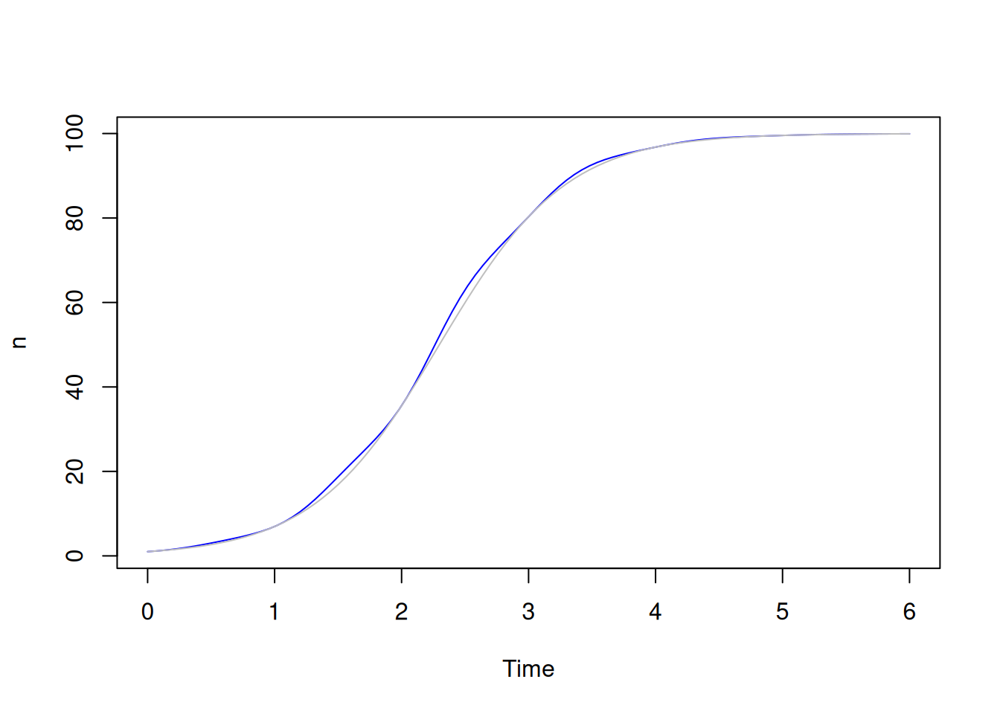
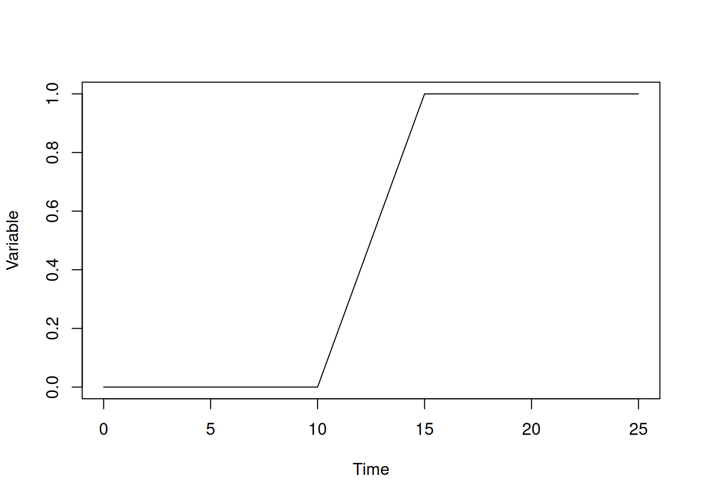
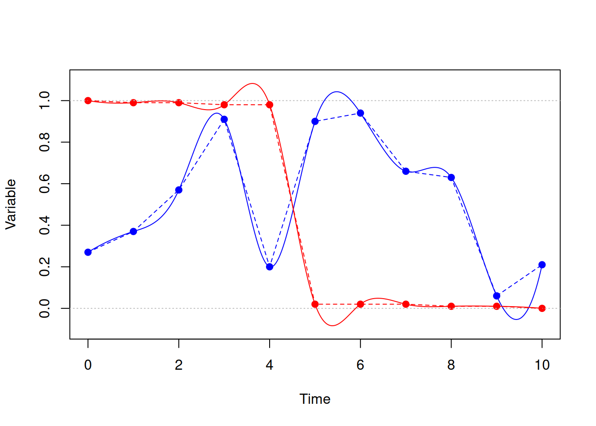
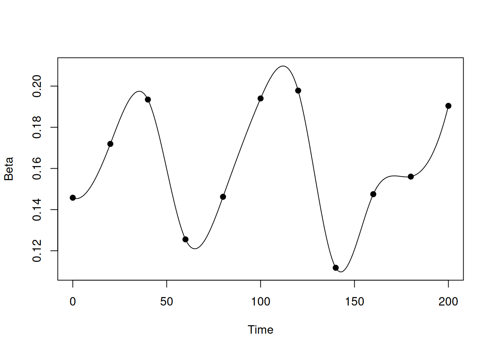
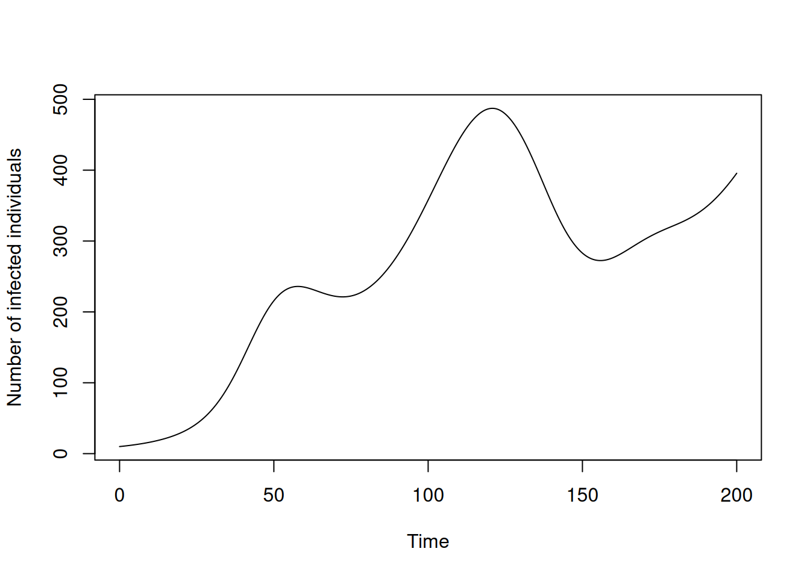

library(odin2)
library(dust2)5 Inputs that vary over time
Odin models propagate variables over time, either in discrete time or continuous (see Chapter 2). However, sometimes it is useful to have these models respond to quantities that themselves vary over time. This chapter explores a few different options, and highlights issues to be aware of when using them.
5.1 Using time within equations
The simplest way to make a model time-dependent is simply to refer to time as a variable. For example, suppose we have a continuous-time logistic growth model (see Section 2.1)
logistic <- odin({
deriv(n) <- r * n * (1 - n / K)
initial(n) <- 1
K <- parameter()
r <- parameter()
})Here we create the system with r of 2 and K of 100, then run it from 0 to 6 time units:
sys <- dust_system_create(logistic(), list(r = 2, K = 100))
dust_system_set_state_initial(sys)
t <- seq(0, 6, length.out = 101)
y <- dust_system_simulate(sys, t)
plot(t, y, type = "l", xlab = "Time", ylab = "n")We might think that growth rate r is seasonal, e.g., it’s higher in the spring and summer than in autumn and winter. Time in this model is fairly arbitrary, so let’s assume that each year is 1 time unit long and let growth rate r be a function of t. Supposing a mean growth rate r0 of 0.1, and assuming a p fraction of the growth rate being seasonal (so that if p is 1 growth is entirely seasonal and if p is 0 we recover our aseasonal model) we might model this as:
r0 <- 2
p <- 0.2
curve(r0 * (1 - p) + r0 * p * (1 + sin(time * 2 * pi)), 0, 6,
n = 1001, xname = "time", xlab = "Time", ylab = "Growth rate")
abline(h = r0, lty = 3)We can use this directly within an odin model with no further modification:
logistic_t <- odin({
deriv(n) <- r * n * (1 - n / K)
initial(n) <- 1
K <- parameter()
r0 <- parameter()
p <- parameter(0.2)
r <- r0 * (1 - p) + r0 * p * (1 + sin(time * 2 * pi))
})Here, we have written r as an expression involving time, which means that at each time step we calculate a new value. Our parameters are now r0 and p as described above.
Here’s the solution plotted against our original one - not terribly different; you can just make out the departure between the blue and the grey lines:
sys <- dust_system_create(logistic_t(), list(r0 = 2, K = 100))
dust_system_set_state_initial(sys)
yt_1 <- dust_system_simulate(sys, t)
plot(t, yt_1, type = "l", xlab = "Time", ylab = "n", col = "blue")
lines(t, y, col = "grey")
Here’s a more extreme set of parameters, where the seasonal effect is 80%, plotted against both solutions where the effect is more obvious:
dust_system_update_pars(sys, list(p = 0.8))
dust_system_set_time(sys, 0)
dust_system_set_state_initial(sys)
yt_2 <- dust_system_simulate(sys, t)
plot(t, yt_1, type = "l", xlab = "Time", ylab = "n", col = "blue")
lines(t, y, col = "grey")
lines(t, yt_2, col = "red")5.2 Nondifferentiable functions
Note
This section may not be very interesting on the first reading, however this is a situation that comes up fairly often and has some subtleties to consider in continuous time systems especially.
So far, so good. One trick to watch out for is where you want to use a non-differentiable function of time, or one with abrupt changes in magnitude. For example, suppose we have a model where there’s a period where some effect happens (e.g., a period where vaccination or infection is possible). We might model this as a square wave:
We might define this within odin code as something like:
signal <- if (time > 4 && time < 5) 1 else 0or we could use a piecewise-constant interpolation function (see below). If we use this within a discrete time model this will behave fine. However, if we use this within a differential equation model then we need to consider how the ODE solver works.
An ode solver works by looking at the slope with respect to time and working out how big a step it can take based on how this slope itself changes as a function of time. Where functions are very smooth (often where they are very flat) an ODE solver can take quite large steps, and it is possible that they can jump right over a spike like this. So if this spike is doing something like introducing infections into your model it’s possible that no-one becomes infected because we never evaluate your right-hand-side function within this window.
If you do land in the window, then the solver will have a difficult job as it tries to work out where this discontinuity started from. Typically, it will reject steps until it “finds” the starting time (here, 4).
What we need to do is pass in a vector of critical times representing times that the solver must stop at.
To make this more concrete, here’s an ODE model which implements a square wave in an input (r) which has 1 between r0 and r1 and affects a variable y. We scale this input so that y will increase by one total unit over time:
wave <- odin({
deriv(y) <- r / (r1 - r0)
initial(y) <- 0
r0 <- parameter(10)
r1 <- parameter(15)
r <- if (time > r0 && time < r1) 1 else 0
})We can run this and plot the output:
sys <- dust_system_create(wave, list())
t <- seq(0, 25)
y <- drop(dust_system_simulate(sys, t))
plot(y ~ t, type = "l", xlab = "Time", ylab = "Variable")
Here, from time 10 the variable increases, reaching a value of 1 at time 15.
We can shrink the time that transition happens, and this will happen more quickly, but always approach 1:
pars <- list(list(r1 = 11), list(r1 = 12), list(r1 = 13), list(r1 = 14))
sys <- dust_system_create(wave, pars, n_groups = 4)
t <- seq(0, 25)
y <- drop(dust_system_simulate(sys, t))
matplot(t, t(y), type = "l", lty = 1, col = "black",
xlab = "Time", ylab = "Variable")With dust_system_simulate() the solver will stop at every time, so we’ll never jump over the solution. But if you were running this where you were just advancing the solution through time you might do so. We get our expected value of (approximately) 1 at time 25 whenever r1 is 15:
sys <- dust_system_create(wave, list(r1 = 15))
dust_system_run_to_time(sys, 25)
dust_system_state(sys)
#> [1] 0.9999531but with an earlier r1, and therefore a shorter window, we jump over this region:
sys <- dust_system_create(wave, list(r1 = 11))
dust_system_run_to_time(sys, 25)
dust_system_state(sys)
#> [1] 0We can see what is going on here by saving out the steps that the solution takes:
control <- dust_ode_control(debug_record_step_times = TRUE)
sys <- dust_system_create(wave, list(r1 = 11), ode_control = control)
dust_system_run_to_time(sys, 25)
times <- dust_system_internals(sys)$step_times[[1]]
plot(t, t > 10, type = "l", xlab = "Time", ylab = "Variable")
points(times, rep(0, length(times)), pch = 19, col = "red")Here, the solver has started off slowly until working out that our solution is really very smooth (it has a derivative of zero!) and then started taking very large steps. One of these has landed just after our transition point has finished so it looks like it is simply not there.
We can use the ode_control to set a vector of critical times, ensuring that the solver will stop at times 10 and 11:
control <- dust_ode_control(critical_times = c(10, 11))
sys <- dust_system_create(wave, list(r1 = 11), ode_control = control)
dust_system_run_to_time(sys, 25)
dust_system_state(sys)
#> [1] 0.9999276With this approach we can ensure that even very small periods of discontinuity are found by the solver.
5.3 Using interpolation functions
Sometimes, you will want the time-varying functions of your model to be driven by data. So rather than having the model driven by seasonal change use some approximation of dynamics as we did with a sin wave above, you might want to use actual temperature or rainfall data. To do this, you can use odin’s “interpolation” functions, which take some series of time points and data and create a continuous function with respect to time. There are several different modes of interpolation available, which you can use to model different sorts of processes.
5.3.1 A base model
Let’s consider changes to a simple SIS (Susceptible-Infected-Susceptible) model. The basic model is a variation on our familiar SIR model that will allow the infection to become endemic, which will suit the demonstration here. We’ll work at first in continuous time, and then consider discrete time later.
sis <- odin({
deriv(S) <- -beta * I * S / N + gamma * I
deriv(I) <- beta * I * S / N - gamma * I
initial(S) <- N - I0
initial(I) <- I0
I0 <- parameter(10)
N <- parameter(1000)
beta <- 0.2
gamma <- 0.1
})Here’s the system plotted over time:
sys <- dust_system_create(sis(), list())
dust_system_set_state_initial(sys)
t <- seq(0, 200, length.out = 501)
y <- dust_system_simulate(sys, t)
y <- dust_unpack_state(sys, y)
plot(t, y$I, type = "l", xlab = "Time", ylab = "Number of infected individuals")5.3.2 Step-wise changes
Suppose we want to model something that is on or off; perhaps beta changes in periods where schools are open or closed for holidays and the dates that this happen vary year-by-year, and we expect that beta is 60% lower when schools are closed due to fewer contacts among individuals. We might describe this in data as:
schools_time <- c(0, 50, 60, 120, 130, 170, 180)
schools_open <- c(1, 0, 1, 0, 1, 0, 1)
schools_modifier <- 0.6And, ignoring odin for a minute, we might demonstrate the effect by writing:
beta0 <- 0.2
beta <- approx(
schools_time,
((1 - schools_open) * (1 - schools_modifier) + schools_open) * beta0,
xout = t,
method = "constant",
rule = 2)
plot(beta, xlab = "Time", ylab = "beta", type = "l", ylim = c(0, 0.25))We can take the same approach in odin, using its constant interpolation method:
sis <- odin({
deriv(S) <- -beta * I * S / N + gamma * I
deriv(I) <- beta * I * S / N - gamma * I
initial(S) <- N - I0
initial(I) <- I0
I0 <- parameter(10)
N <- parameter(1000)
beta0 <- parameter(0.2)
schools <- interpolate(schools_time, schools_open, "constant")
schools_time <- parameter(constant = TRUE)
schools_open <- parameter(constant = TRUE)
dim(schools_time, schools_open) <- parameter(rank = 1)
schools_modifier <- parameter(0.6)
beta <- ((1 - schools) * (1 - schools_modifier) + schools) * beta0
gamma <- 0.1
})When we create the system, we must pass in values for the components of school; there are no defaults for vector parameters. The constant = TRUE argument when declaring the parameters specifies that these parameters cannot be changed after being set; this is necessary if we wanted to use these parameters to index into an array later, but moreover makes our intentions clear for the purposes of these parameters.
pars <- list(schools_time = schools_time, schools_open = schools_open)
sys <- dust_system_create(sis(), pars)Run the system over the times as above, and plot the number of infected individuals over time, with the school closures in grey shading:
dust_system_set_state_initial(sys)
t <- seq(0, 200, length.out = 501)
y <- dust_system_simulate(sys, t)
y <- dust_unpack_state(sys, y)
plot(t, y$I, type = "l", xlab = "Time", ylab = "Number of infected individuals")
rect(schools_time[c(2, 4, 6)], par("usr")[3],
schools_time[c(3, 5, 7)], par("usr")[4], col = "#00000033", border = NA)Instead of piecewise constant functions, you can use piecewise linear functions or cubic spline interpolation. These allow for smoother changes in values than the piecewise constant functions above but with different properties.
Here we have piecewise constant (dotted) and cubic spline (solid) interpolation functions through 11 evenly spaced data points:

The blue points might represent the strength of some signal over time, and we might prefer the smoothing effect of the spline to the rapid changes in the piecewise line function (e.g., around time 4). Notice that it does show some surprising oscillations (e.g., between time 9-10).
The red points might represent some variable moving through a phase transition, slowly decreasing then rapidly decaying to zero. The spline has “smoothed” this out by making it very wiggly, and pushing it outside of the range [0, 1].
Here’s an example with a time varying rate of contact between susceptible individuals and infected individuals (or a varying rate of infection given contact), using spline interpolation:
sis <- odin({
deriv(S) <- -beta * I * S / N + gamma * I
deriv(I) <- beta * I * S / N - gamma * I
initial(S) <- N - I0
initial(I) <- I0
I0 <- parameter(10)
N <- parameter(1000)
beta <- interpolate(beta_time, beta_value, "spline")
beta_time <- parameter(constant = TRUE)
beta_value <- parameter(constant = TRUE)
dim(beta_time, beta_value) <- parameter(rank = 1)
gamma <- 0.1
})Suppose we have some beta values that vary over time:
beta_time <- seq(0, 200, by = 20)
beta_value <- runif(length(beta_time), 0.1, 0.2)
plot(spline(beta_time, beta_value, n = 201), type = "l",
xlab = "Time", ylab = "Beta")
points(beta_time, beta_value, pch = 19)
We initialise this system with our values for beta_time and beta_value, and when we run the system we will see the number of infected individuals rise and fall with beta:
pars <- list(beta_time = beta_time, beta_value = beta_value)
sys <- dust_system_create(sis, pars)
dust_system_set_state_initial(sys)
t <- seq(0, 200, length.out = 501)
y <- dust_system_simulate(sys, t)
y <- dust_unpack_state(sys, y)
plot(t, y$I, type = "l", xlab = "Time", ylab = "Number of infected individuals")
5.3.3 Interpolation of arrays
There are situations where you won’t just want to interpolate a scalar value at a time point, but an array. For instance, you have parameters indicating the daily number of vaccine doses that are being distributed and the time points at which these change.
In such an example the relevant odin code could be
daily_doses_value <- parameter(constant = TRUE)
dim(daily_doses_value) <- parameter(rank = 2)
daily_doses_time <- parameter(constant = TRUE)
dim(daily_doses_time) <- parameter(rank = 1)
daily_doses <- interpolate(daily_doses_time, daily_doses_value, "constant")
dim(daily_doses) <- N_ageHere daily_doses_value will be an array with first dimension of length N_age and the 2nd dimension of length equal to the length of daily_doses_time. Thus daily_doses_value[i, j] will be the value of daily_doses[i] at time daily_doses_time[j]. Interpolation will then be applied for each i (constant interpolation in the above case, but it could also be linear).
Note that the syntax of the line
daily_doses <- interpolate(daily_doses_time, daily_doses_value, "constant")does not differ whether are interpolating a scalar quantity or an array quantity.
In this example we have interpolated a vector quantity. You can interpolate higher-dimensional arrays. Just always make sure that the last dimension of your “value” array corresponds to your “time” vector.